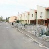

Spune că dacă ar fi mai grasă cu 20 kg n-ar mai candida niciodată şi crede că igiena orală e cartea de vizită oricărui politician. S-a născut acum 35 de ani la Tecuci şi a mediat un triunghi amoros cu divorţuri, abandonuri, acuze şi pasiune intensă. A fost amanta unora dintre cei mai puternici bărbaţi din politica românească, iar acum graseiază senzual în comisia de elită care va elabora modificările legii fundamentate, Constituţia. E avocată, se numeşte Alina-Ştefania Gorghiu (cu accent pe prima silabă, în niciun caz Alina Gheorghiu) şi e propunerea de nerefuzat a Uniunii Social Liberale pentru titlul de cea mai sexy femeie din Parlamentul României. Galeria foto prezentată mai jos conţine argumente vizuale ispititoare.
Alina Gorghiu (PNL), pragmatica diafană
Aproape uitasem că serialul “Seducţie electorală” început cu distinsa Valeria Schelean – PDL (via Gruia Stoica) şi continuat prin prezentarea superbei Antonela Simion – PPDD (via Petrică Hogea) e incomplet. Şi tare păcat era! Din tablou lipsea tocmai exponenta majorităţii parlamentare, iar recentul congres al PNL ne-a semnalat această nedreptate, amintindu-ne că trebuie să scriem şi despre Alina Gorghiu. Liberala domnişoară e la al doilea mandat de aleasă a poporului, ocupând funcţia de deputat în circumscripţia electorală Bucureşti, Colegiul Uninominal 22. În sectorul 5, adică e aproape garantată de Marean Vanghelie.
Trup şi suflet în partid. Triunghiul iubirii la PNL
Alina Gorghiu e specialistă în mediere şi simte liberal până în profunzimile intime. Presa a relatat pe larg oscilaţiile de budoar ale frumoasei politiciene. Conform ziarelor de scandal, cea mai sexi femeie din USL s-a iubit cu vicepreşedintele executiv al PNL Mihai Voicu. Apoi s-a cuplat cu viceguvernatorul Băncii Naţionale (BNR) Bogdan Olteanu, pentru ca ulterior să revină la prima dragoste masculină din Partidul Naţional Liberal. Numai că, între timp, Olteanu a divorţat, iar maliţioşii insinuează că aventura acestuia cu domnişoara Gorghiu ar fi tocmai cauza despărţirii. Se pare că fosta doamnă Olteanu nu auzise despre avantajele medierii.
Despre pendulările sentimentale ale focoasei Alina Gorghiu puteţi citi pe larg aici şi în tabloide. Noi ne-am încurcat în succesiunea bărbaţilor decisivi din viaţa avocatei şi n-am mai priceput cine amantul cui a fost, unde şi când s-au mai amorezat. Mai important e … de ce s-au iubit aşa pătimaş.
Între doi bărbaţi puternici
Mihai Alexandru Voicu (45 de ani) e actualul Ministru delegat pentru relaţia cu Parlamentul şi purtător de cuvânt al PNL. A fost secretar al Camerei Deputaţilor, dar şi secretar general al Guvernului. Din 2004 şi până în prezent a tot făcut parte din forurile de conducere ale liberalilor. La Congresul din februarie 2013 a fost ales vicepreşedinte executiv cu atribuţii în domeniul comunicării.
Bogdan Olteanu (42 de ani) e Membru al Consiliului de administraţie şi viceguvernator BNR. A deţinut funcţia de preşedinte al Camerei Deputaţilor între 2006 şi 2008. A fost ministru delegat pentru relaţia cu Parlamentul în Guvernul Tăriceanu. Adică a avut exact funcţia pe care azi o are Voicu în Guvernul Ponta 2.0. În plus, Olteanu a fost asociat în firma de avocatură a Ştefaniei Alina Gorghiu.
Haideţi să vedem cu ce atuuri le-a încântat simţurile amanta Alina Gorghiu. Din pozele următoarei galerii foto putem extrage câteva indicii:

Abonament la contracte juridice cu statul
Să fi fost relaţiile erotice cu potentaţii liberali gratificante pentru sexi deputata USL? Sau e iubire inocentă, iar Alina Gorghiu s-a dăruit candid ca o fecioară? Trecerea în revistă a câtorva dintre activităţile profesionale ale colegei de Comisie juridică (şi alianţă politică) a justiţiarului Gigi Becali oferă un posibil răspuns.
În calitate de asociat al firmei de avocatură “SCA Gorghiu, Pop si Asociaţii”, graţioasa Ştefania – Alina s-a specializat în afaceri juridice cu statul. Începând cu anul 2008, casa ei de avocatură a reprezentat Autoritatea pentru Valorificare Activelor Statului (AVAS) în mai multe procese. Cam de vreo 43.000 € onorarii. Mărunţiş. Detalii concrete găsiţi aici. Relaţia prolifică şi călduroasă cu AVAS s-a materializat şi în contracte de asistenţă juridică cu societăţi comerciale aflate în patrimoniul Autorităţii. Spre exemplu, S.C. BTT S.A., la care AVAS deţine 88% din capitalul social, e reprezentată în instanţă tot de Alina Gorghiu. Desigur, cauza acestor multiple coincidenţe poate fi faptul că domnişoara e doctor. Aţi ghicit, e doctor în drept, cum se poartă printre guvernanţi.
Membru în Consilii de Administraţie
În ultimii ani, sexy parlamentara PNL a fost numită cu regularitate membru în diverse Consilii de Administraţie: la Teletrans S.A. (filială a Transelectrica S.A.), dar şi la Ceprohart S.A. Braila, Scudas S.A. Pascani şi C.N. Imprimeria Naţională S.A. Ce au în comun toate aceste patru societăţi pe acţiuni? Simplu, sunt sau au fost controlate de statul român. Perfectul compus se aplică defunctei întreprinderi Scudas din Paşcani. Graţie inclusiv administrării magistrale a directorilor numiţi de AVAS, compania şi-a dat obştescul faliment şi a fost lichidată. Aşadar, ea nu mai aparţine statului, căci nu mai există.
Ce înseamnă prezenţa în Consiliul de Administraţie din punct de vedere pecuniar? Doar un exemplu ilustrativ: în 2008, Alina Ştefania Gorghiu a încasat numai de la S.C. Teletrans S.A. o indemnizaţie netă de 38.398 de lei (peste 10.000 de Euro la cursul mediu al anului respectiv) în calitate de umil membru al C.A. Şi era doar unul dintre posturile de vârf pe care liberala îl ocupa în organele de conducere ale întreprinderilor statului. Nu-i rău, nu?
Pasionala Alina Gorghiu a fost consiliera personală a şefului AVAS, liberalul Teodor Atanasiu. În aceeaşi perioadă, la Direcţia Control lucra un anume Mircea-Daniel Gorghiu. Număraţi dumneavoastră în câte Consilii de Administraţie era titular numitul domn. Absolut întâmplător, Mircea şi Alina Gorghiu sunt frate şi soră.
Vilă de la ANL lângă Herăstrău
Odată cu ascensiunea politică, Alina Gorghiu a dobândit şi o casă nou-nouţă. Mai exact, o superbă vilă construită de Agenţia Naţională pentru Locuinţe (ANL) în zona de nord a capitalei. Nu-i mare lucru, să ştiţi. Cartierul rezidenţial din Sectorul 1 al Bucureştiului are puţin peste 3,5 hectare, se învecinează doar cu Romexpo, se numeşte “Ansamblul Parcului” şi arată fix ca în această fotografie. Dacă sunteţi curioşi cum e acasă la Alina Gorghiu şi cu ce vecini celebri îşi bea rafinata mediatoare cafeluţele matinale în domiciliul din strada Parcului, puteţi citi despre proiectul secret al ANL. Acolo sunt menţionate şi preţurile derizorii interesante pe care protipendada le-a achitat pentru locuinţele de la stat.
Dacă e să ne luăm după zodiac, PNL-ista Alina Gorghiu e fecioară. S-a născut pe 16 septembrie 1978 la Tecuci, în judeţul Galaţi, dar şi-a petrecut adolescenţa la Curtea de Argeş. Are ca pasiuni căţeii flocoşi de talie mică (Bichon Frisé, pentru cunoscători), modul de viaţă eco, pedalatul cu spor şi puterea. O puteţi urmări în imaginile de mai jos explicând unui ţânc baricadat în spatele unei uşi că deputaţii sunt oameni de încredere. Copiii spun adevăruri dureroase uneori şi sunt greu de momit cu materiale electorale, aşa că domniţa liberală a rămas pe afară. După ce a aflat cine îi sună la uşă, plodul a concluzionat: eu nu deschid hoţilor! Iată videoclipul:
Alina Gorghiu a investit masiv comunicarea din mediul virtual, fiind o prezenţă cu numeroşi susţinători partizani în online. Recomandăm armatei de postaci să citească şi celelalte episoade ale serialului “Seducţie electorală” (PD-L şi PP-DD) înainte de a se repezi să deşerte clişee în comentarii, pe modelul UNPR.


{kind=link}
{kind=link}
{kind=link}
{kind=link}
{kind=link}
{kind=link}
{kind=link}
{kind=link}
{kind=link}
{kind=link}
{kind=link}
{kind=link}
{kind=link}
{kind=link}
{kind=link}
{kind=link}
{kind=link}
{kind=link}
{kind=link}
nooooo, esti rau cu ea!
Verisoara lui Elena Udrea )) Sper sa nu ajunga si Johannis varul lui basescu
)) Sper sa nu ajunga si Johannis varul lui basescu  ))
))
Adevarul dureros este ca ai consumat atata energie rastalmacind spusele unui copil, de dragul intereselor tale. Ai sacrificat fondul (“mama mi-a spus sa nu deschid necunoscutilor cand ea nu e acasa pentru ca ar putea fi hoti”) pentru (“imi place sa strig ca politicienii sunt hoti, asa ca ma folosesc si de un copil pentru asta”). Te-ai comportat ca un politician, de fapt.
@Felicia(3), un dram de umor de situaţie n-a omorât pe nimeni. Ai putea să-l încerci din când în când. Nu-i nimic dureros în toată povestea, niciun copil n-a fost rănit în timpul scrierii acestui articol.
Ce parere avem?DEPLORABILA!E trup si suflet PARTIDULUI SAU? HAIT!La domnu’Dracu…Nu stie cum sa parvina,cum sa se mai imbogateasca si sa se bage in seama…sa se mai marite o data,dar nu cu oricine…E atat de antipatica …cand vorbeste si isi stramba gura de la o ureche la alta!e in stare de orice numai sa puna mana pe PUTERE…SA FIE SI EA CEVA PE LANGA IOHANNIS ,CARE O TOLEREAZA PENTRUCA au aceeasi dorinta de a avea “guvernul lor”!Ce sa zicem …”guvernul lor”!!!!nu-i asa???Cum au ajuns la putere ,cum au DORINTE MARI.PARCA SPUNEAU, ca nu e bine ca un partid sa aiba toata puterea…de aceea lumea e ingretosata si regreta ce au ales!
E o coada despicata !
Comments on this entry are closed.